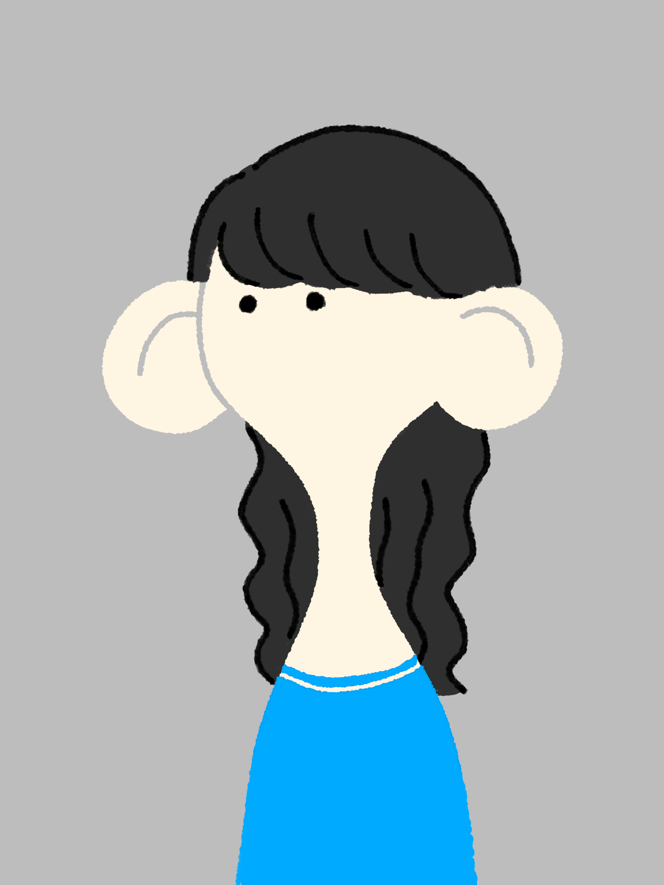

団体メンバー

竹内日菜乃
役者、宣伝美術、広報
2001年生まれ。新潟県出身。
幼少よりクラシックバレエをならい、大学でコンテンポラリーダンスを学び始める。
三転倒立では、役者・宣伝美術、森山と共に共同主宰を務める。
主な出演に、三転倒立『あたかも』『たくする』『友達の友達』見本市2024参加作品『(なみだ)』『すべてはポーズでしかない』、 はちみつ『或る街』、さるさるさる松井絵里『心からのみこめば』など。
幼少よりクラシックバレエをならい、大学でコンテンポラリーダンスを学び始める。
三転倒立では、役者・宣伝美術、森山と共に共同主宰を務める。
主な出演に、三転倒立『あたかも』『たくする』『友達の友達』見本市2024参加作品『(なみだ)』『すべてはポーズでしかない』、 はちみつ『或る街』、さるさるさる松井絵里『心からのみこめば』など。

森山千代
劇作、演出、ドラマトゥルク、役者
2001年生まれ。長崎県出身。
大学卒業後、社会人生活と並行して演劇を続ける。 主に劇作、演出、俳優、ドラマトゥルクとして活動。
三転倒立では竹内と共に共同主宰を務める。
主な参加に、三転倒立『あたかも』『たくする』『友達の友達』見本市2024参加作品『(なみだ)』『すべてはポーズでしかない』、 関田育子マグカルシアター参加作品『at one』舞台芸術祭「秋の隕石2025東京」プログラム『under take』など。
大学卒業後、社会人生活と並行して演劇を続ける。 主に劇作、演出、俳優、ドラマトゥルクとして活動。
三転倒立では竹内と共に共同主宰を務める。
主な参加に、三転倒立『あたかも』『たくする』『友達の友達』見本市2024参加作品『(なみだ)』『すべてはポーズでしかない』、 関田育子マグカルシアター参加作品『at one』舞台芸術祭「秋の隕石2025東京」プログラム『under take』など。

狩野瑞樹
劇作、演出、役者
2001年生まれ。岩手県出身。
桜美林大学を中退し、多摩美術大学に編入、のち卒業。 三転倒立では劇作や演出として、稽古場に参加しています。俳優もするときがあります。
主な参加として、三転倒立の作品、演劇ユニットせのび『レーン』、範宙遊泳『心の声など聞こえるか』、 ザジ・ズー『ザジ・ズーオブザナイト～KISS降る夜に星を見ろ～』、コーポ指『はくり』、キルハトッテ『チョコレイト』など。
桜美林大学を中退し、多摩美術大学に編入、のち卒業。 三転倒立では劇作や演出として、稽古場に参加しています。俳優もするときがあります。
主な参加として、三転倒立の作品、演劇ユニットせのび『レーン』、範宙遊泳『心の声など聞こえるか』、 ザジ・ズー『ザジ・ズーオブザナイト～KISS降る夜に星を見ろ～』、コーポ指『はくり』、キルハトッテ『チョコレイト』など。

板谷有紀子
舞台美術
2002年生まれ。神奈川県出身。
2022年より三転倒立に所属し、舞台美術を担当。
桜美林大学演劇・ダンス専修在学中より、演劇及びダンス公演の舞台美術を経験。 3年次より本格的に舞台美術プランナーを始める。
現在はテレビにフィールドを変え、フジテレビに制作（AD）として勤務。
舞台美術プランナーとして参加した主な作品は、三転倒立『あたかも』『たくする』『友達の友達』 見本市2024参加作品『（なみだ）』、KANESHITA・OPAL2023『死の棘』など。
2022年より三転倒立に所属し、舞台美術を担当。
桜美林大学演劇・ダンス専修在学中より、演劇及びダンス公演の舞台美術を経験。 3年次より本格的に舞台美術プランナーを始める。
現在はテレビにフィールドを変え、フジテレビに制作（AD）として勤務。
舞台美術プランナーとして参加した主な作品は、三転倒立『あたかも』『たくする』『友達の友達』 見本市2024参加作品『（なみだ）』、KANESHITA・OPAL2023『死の棘』など。

安藤保佳
舞台制作
2002年生まれ。神奈川県出身。
桜美林大学在学中より、演劇やコンテンポラリーダンスなどジャンルに限らず舞台芸術の制作を行う。 劇団制作から公共文化施設での企画制作などの経験を経て、現在は横浜市の劇場に勤め、施設としての企画運営を学んでいる。
三転倒立『あたかも』『友達の友達』見本市2024参加作品『（なみだ）』、滋企画『K2』、フリーステージ2023など。
桜美林大学在学中より、演劇やコンテンポラリーダンスなどジャンルに限らず舞台芸術の制作を行う。 劇団制作から公共文化施設での企画制作などの経験を経て、現在は横浜市の劇場に勤め、施設としての企画運営を学んでいる。
三転倒立『あたかも』『友達の友達』見本市2024参加作品『（なみだ）』、滋企画『K2』、フリーステージ2023など。